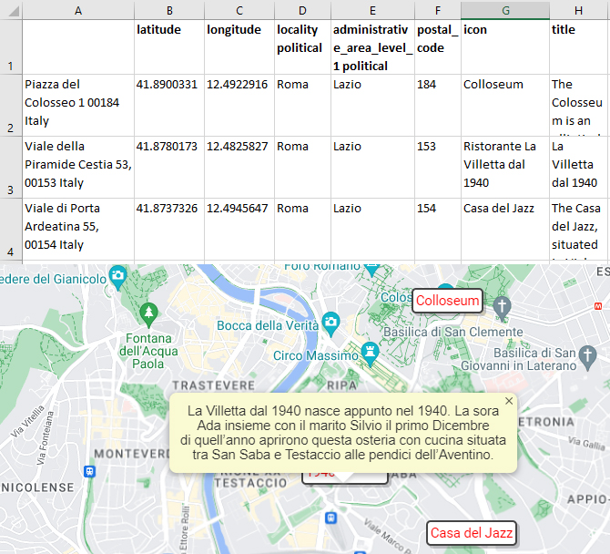

Fields
Each place to be drawn on the map is represented by a row in the worksheet. A place is recognised by having a latitude and a longitude field in the header row:

Alongside the latitude and a longitude fields are optional further fields which:
- Fetch information from Google Maps: latitude, longitude, locality political, postal_code, ...
- Specify how the place will be drawn: icon, title, ...
Every field has a default value, which can be overridden for each place by specifying the value in the column with the field's name. These field names can be inserted with the Insert⇒Field dialog dialog.
{kind=link}
N.B. The latitude and a longitude column field labels must be within the the first 10 rows and the first 25 columns.
Setting the default values for drawing on the map
The Toools⇒Drawing dialog is used to set the default drawing values:

| align | Alignment of icons relative to the point that they mark: top, left, bottom, right (a single character suffices). |
| arrow | Google Material Symbol used to draw arrows on lines. The arrrow is rotated to point along the line; for this to work the chosen symbol must be pointing upwards at zero degrees, replace spaces in the name with underscores. Example: Expand_Less |
| arrowColor | Either a known-colour name (Red, Lime, Blue, ...) or a hexadecimal code with a hashsign (#FF0000, #00FF00, #0000FF) |
| arrowSize | A number in pixels, 50 is a good starting point |
| Icon |
Glyph, text or HTML to draw
|
| iconColor | Either a known-colour name (Red, Lime, Blue, ...) or a hexadecimal code with a hashsign (#FF0000, #00FF00, #0000FF). 8-digit hexadecimal colours with transparency are supported (50% Red = #FF000088). |
| iconSize | The size of the icon in pixels. 35 is a good starting point. |
| lineTitle | The text to display when hovering over a line; the text will be broken into lines to make a nice rectangular paragraph. Alternatively, arbitrary HTML, which will be drawn as-is |
| strokeColor | The colour used to draw lines. Either a known-colour name (Red, Lime, Blue, ...) or a hexadecimal code with a hashsign (#FF0000, #00FF00, #0000FF) 8-digit hexadecimal colours with transparency are supported (50% Red = #FF000088). |
| strokeOpacity | The opacity used to draw lanes, a fraction between 0.0 and 1.0. 0.0 = Transparent, 1.0 = Opaque |
| strokeWeight | The thickness of lines in pixels |
| symbols | The Material Symbol Style: Outlined, Rounded or Sharp |
| title | The text to display in an InfoBox when the mouse is hovered over the icon; the text will be broken into lines to make a nice rectangular paragraph. Alternatively, arbitrary HTML, which will be drawn as-is |
{kind=link}